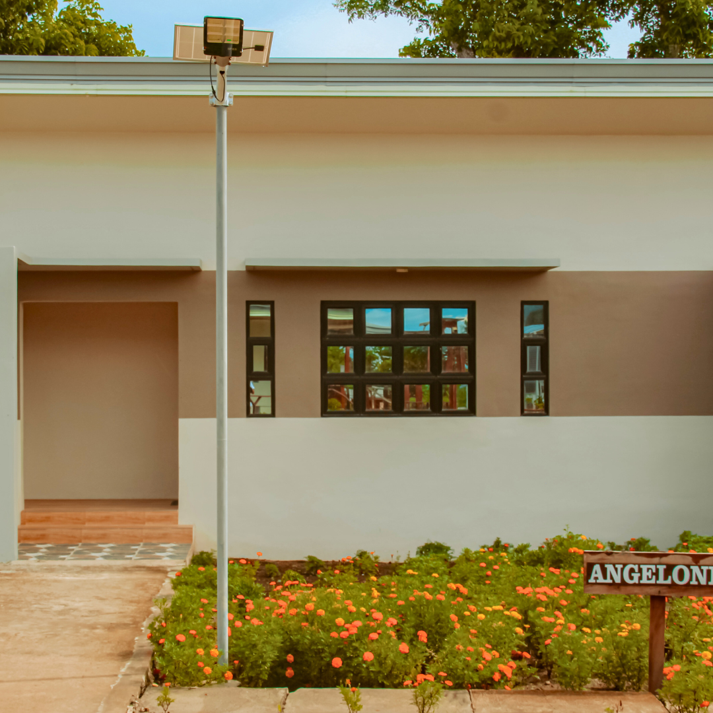
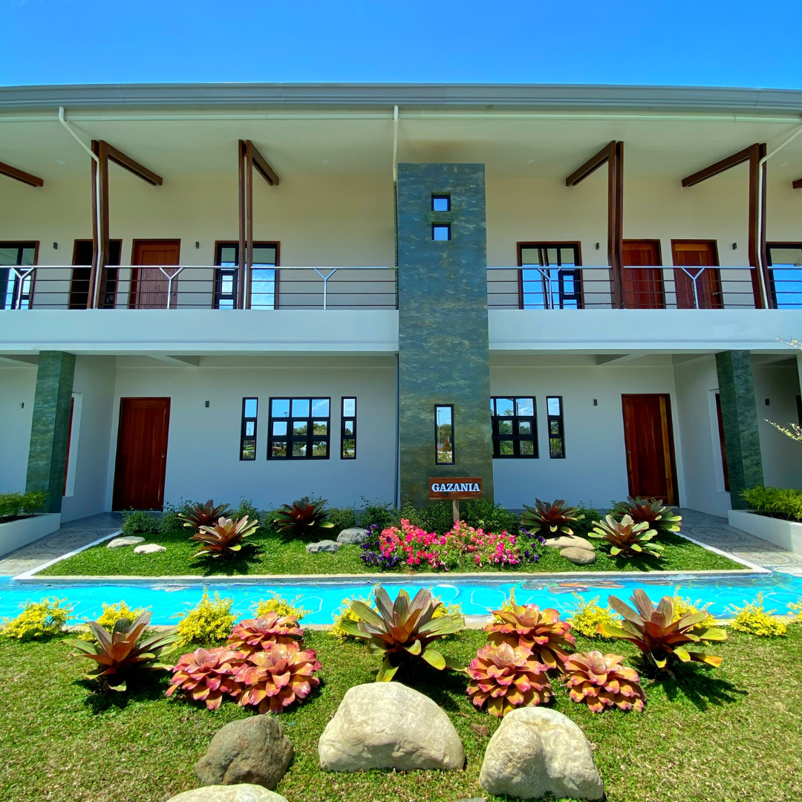
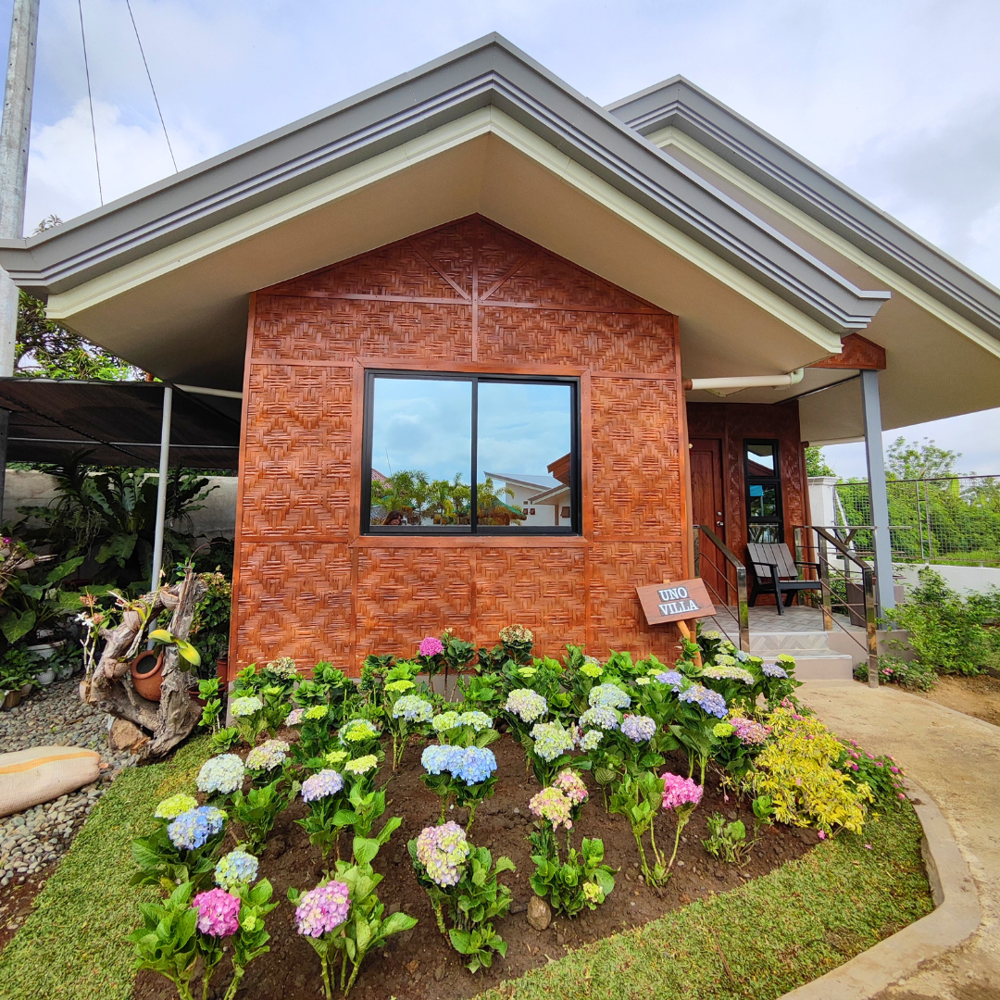
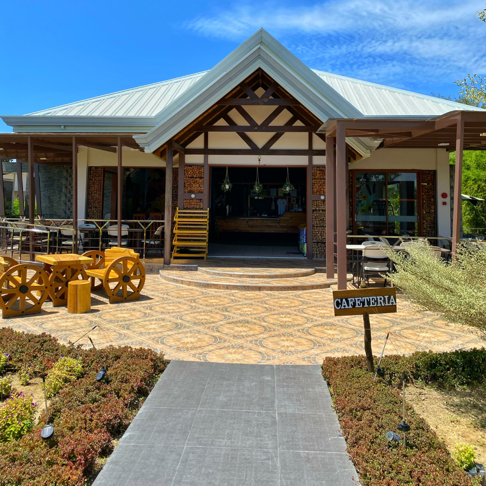
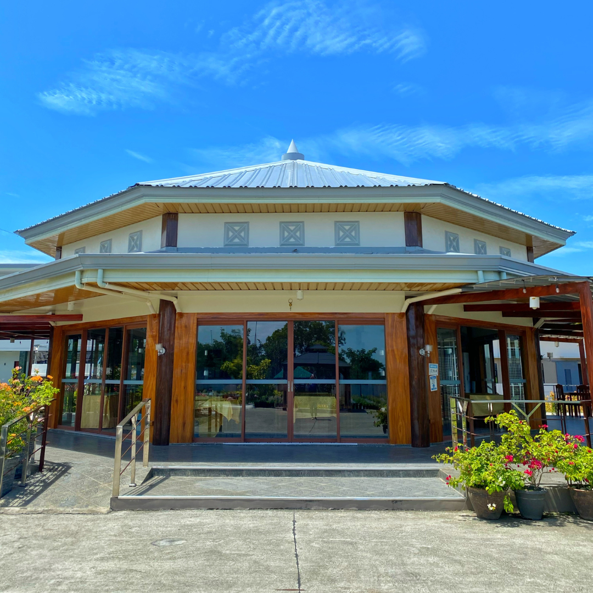
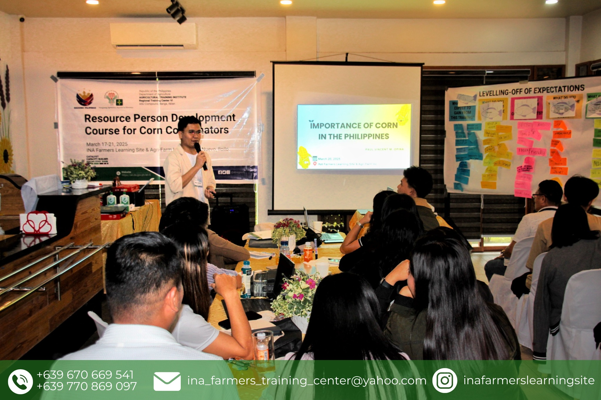

INA FARMERS LEARNING SITE & AGRI-FARM INC.
Photo Gallery
Explore the beauty of our facilities, gardens, and activities through our visual journey
Browse GalleryOur Gallery Collection
All
Facilities
Activities
Agriculture
Events










